Companion Web Interface
The Companion computer(Install instructions) hosts a useful web-interface with different pages for accessing parameters and functionalities associated with Companion. When a Companion computer is connected to a ground computer, a user can access the web-interface on 192.168.2.2:2770. Users can access Network, System, Camera and Routing pages alongside a number of other user friendly options as described below.
Companion Header
The web interface header displays the Companion software version. It provides navigation links to the main configuration pages available in the web interface, options to restart and shutdown the Companion computer, and a switch to enable advanced options on the current page (if available).
Network
The web interface by default opens at the Network page. This page allows users to:
- Configure WiFi
- Check WiFi and Internet Status
- Configure Ethernet IP address
- Test the network for Uploads and Downloads
- Ethernet network configuration (advanced): The Ethernet interface can be configured as DHCP Server, DHCP Client or Manual (static) mode.
- Manual: Manual: The interface is configured with a static IP address. This is the default configuration. The default IP address is 192.168.2.2.
- DHCP Server: The interface is configured as a DHCP server on the 192.168.2.x subnet. The interface IP address will be 192.168.2.2 in this mode.
- DHCP Client: This is useful for connecting to a router.
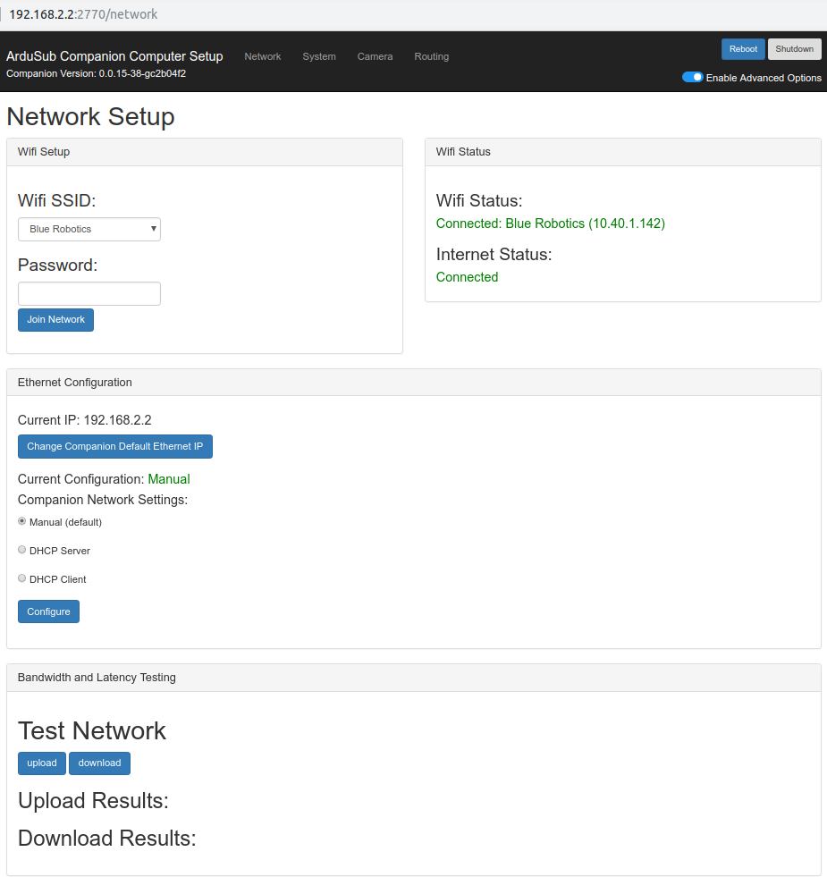
System
The System page provides the following functionalities and features:
- Update the Companion software
- Display system resource information
- Display the active services
- Display detected/recognized devices
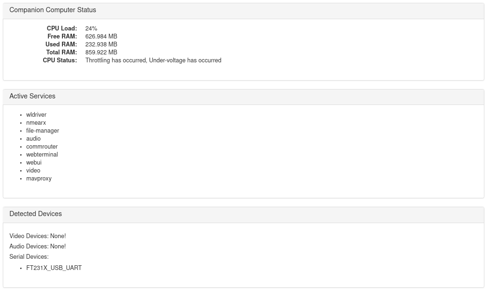
- Display current ArduSub firmware version on the autopilot
- Download, Update, or Restore pixhawk firmware
- Download a system log for the web interface
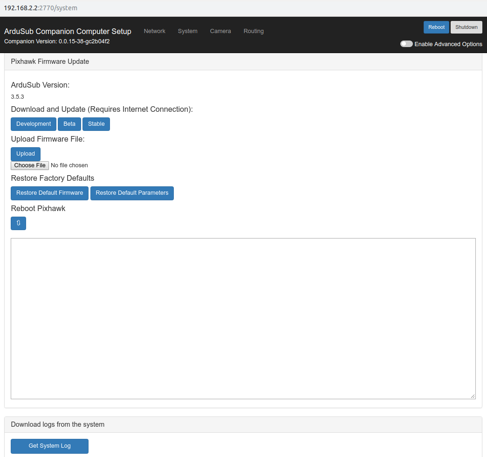
Camera
The Camera page allows the user to view and make changes to:
- Detailed camera settings including Brightness, Contrast, Hue, Sharpness, etc. among others
- Video Streaming settings including selecting a video device, format and frame size
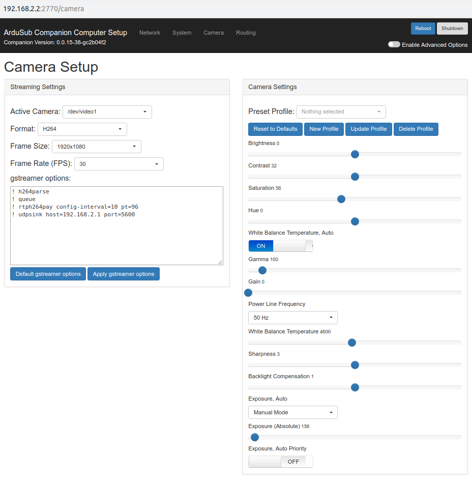
Routing
The Routing page can be used to route serial communications between serial devices and network ports. It can be used to create one-to-one, and one-to-many connections. The configuration on this page is persistent and loaded at boot. The configuration is stored in the file ~/routing.conf.
This program is written in python and is not optimized or well-suited for high-bandwidth applications. The maximum recommended baudrate is 115200. If high bandwidth routing is required, standard linux tools like
tty,socatandnetcatshould be used instead.
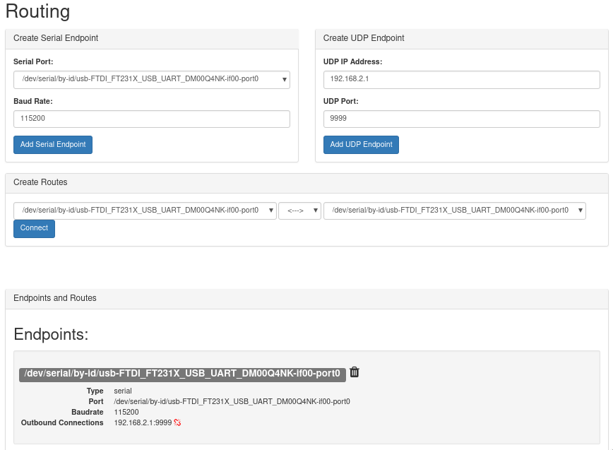
To use the companion routing tool:
- create one or more endpoints with your desired configuration
- add connections between the endpoints as you want
- remove connections by clicking the 'broken link' button next to the configuration
- remove endpoints by clicking the 'trash can' button next to the configuration
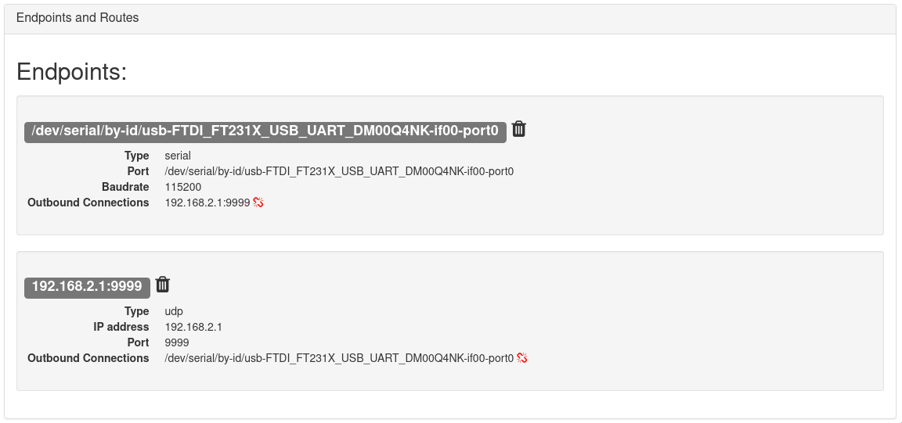
Endpoints
An endpoint can be a serial port or a network port. Create an endpoint by entering the desired port settings, and click 'create link'.
Serial Endpoints
Select one of the available serial ports from the drop down list, and choose the baudrate to use. The serial port must not be in use by another program! Click 'Add Serial Endpoint' to create the communication endpoint.
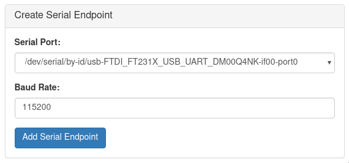
UDP Endpoints
Enter the ip address and UDP port to use. If the ip address is '0.0.0.0', it will bind the local port as a server. All other ip addresses will result in a client connection. Click 'Add UDP Endpoint' to create the communication endpoint.
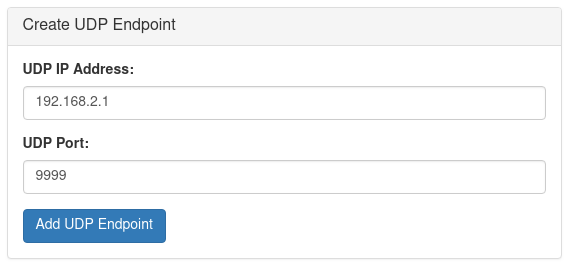
Routes
Endpoints can be connected bidirectionally (typical), or with a one way connection. To begin routing communications between endpoints, choose the endpoints that you wish to connect, the direction to route communications, and click 'connect'.
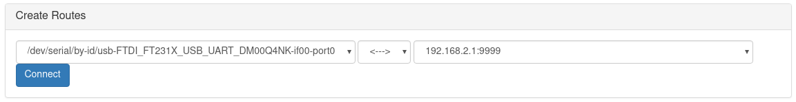
Example configurations
Topside as UDP Server
To bridge serial communications between a device connected to the companion computer inside the ROV, and the existing network connection to the topside computer:
- Create a serial endpoint corresponding to the attached serial device and the desired serial baudrate
- Create a UDP endpoint using the topside computer IP address 192.168.2.1, and the port that the topside application will bind.
- Connect them bidirectionally
- The application on the topside computer should bind the UDP port as a server
To test the connection on a linux machine, bind to the port with "netcat" on the topside computer: nc -ulp <port>
Topside as UDP Server mode is not recommended for master-slave setups. For the connection to be properly stabilished, the serial device must send some data. Only then the connection is stabilished and the topside is able to send data to the companion.
This python script exemplifies how to run an UDP server with Python:
"""
Companion routing UDP server example.
This script Binds to an UDP port and receives data from the Companion at
a given port.
You should run this at your topside computer.
"""
import socket
UDP_IP = "192.168.2.1" # Topside (local) IP
UDP_PORT = 5555 # Topside (local) port to listen on
sock = socket.socket(socket.AF_INET, # Internet
socket.SOCK_DGRAM) # UDP
sock.bind((UDP_IP, UDP_PORT))
while True:
data, addr = sock.recvfrom(1024) # Buffer size is 1024 bytes
print(data.decode())
Companion as UDP Server
- Create a serial endpoint corresponding to the attached serial device and the desired serial baudrate
- Create a UDP endpoint using the 0.0.0.0 IP address, and the port that the server will bind to.
- Connect them bidirectionally
- The application on the topside computer should connect to 192.168.2.2 at the port chosen in step two
To test the connection on a linux machine, bind to the port with "netcat" on the topside computer: nc -u 192.168.2.2 <port>
This Python example shows how to communicate using these UDP ports:
"""
Companion routing UDP client example.
This script connects to a endpoint at the Companion exposed using the IP 0.0.0.0
and a given port. It then sends some data so the server knows it has a client
and starts relaying the serial data back at it.
You should run this at your topside computer.
"""
import socket
import time
UDP_IP = "192.168.2.2" # Remote (Companion's) IP to connect to
UDP_PORT = 5555 # Remote (Companion's) port to connect to
sock = socket.socket(socket.AF_INET, socket.SOCK_DGRAM)
try:
# Send something so the server knows where to reply to
sent = sock.sendto(b"hello", (UDP_IP, UDP_PORT))
# Loop receiving data
while True:
data, server = sock.recvfrom(4096)
print(data.decode())
time.sleep(0.01)
except Exception as e:
print(e)
finally:
sock.close()
Other Pages:
Apart from the four pages that can be accessed via direct links, Companion web interface also provides a few other pages for interacting with some more features.
MAVProxy
MAVProxy page allows the user to:
- Adjust the MAVProxy settings
- Restart or Restore MAVProxy
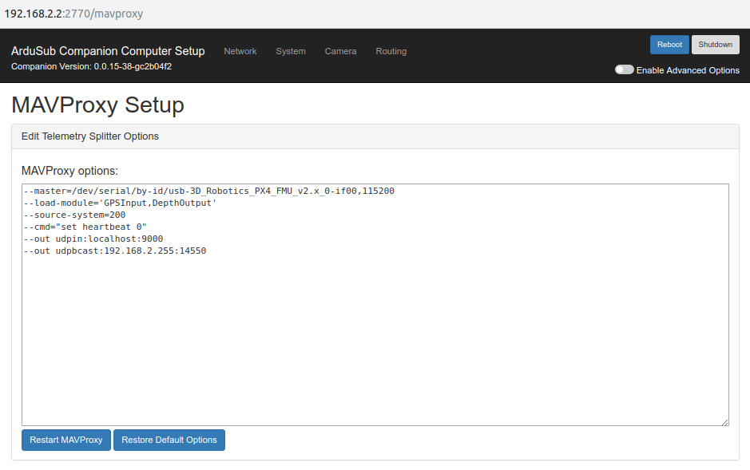
Git
Git page is used for:
- Displaying the current head
- Adding remote repositories
- Updating the system to development branches
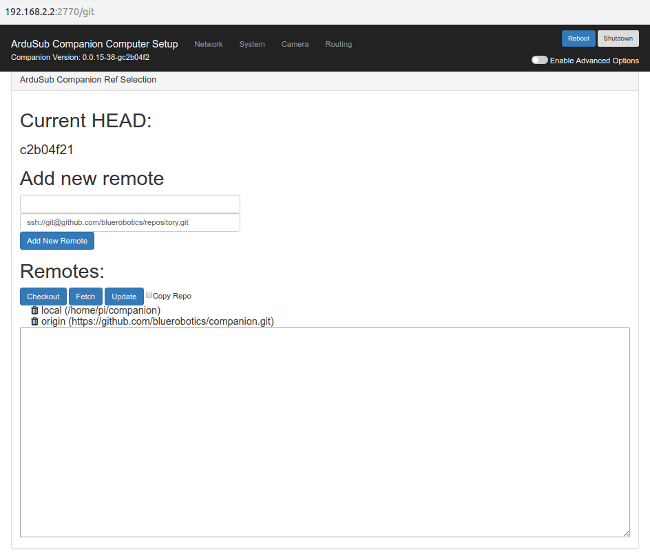
Manual updates
This feature is for development and testing only. It can result in unstable behavior or an unusable system. You should only use this if directed during technical support or beta testing.
Before continuing, make sure that you have internet access.
Steps to manually update via the Git page:
- Click in Fetch to get the last changes of the remote repositories.
- Select the desired remote, origin for Blue Robotics repository.
- Click in tags to open the available options.
- Select the tag that you want to update, it'll be highlighted when selected.
- Click in Update to update companion to the selected version.
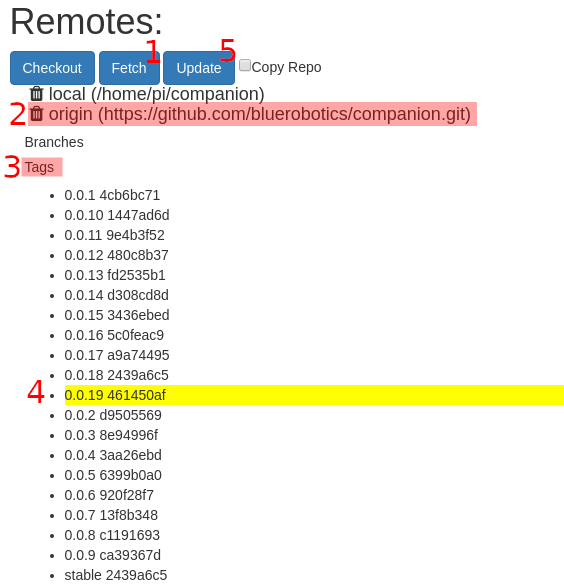
Waterlinked
Waterlinked page can be used to:
- Setup waterlinked underwater GPS driver
- Restart driver
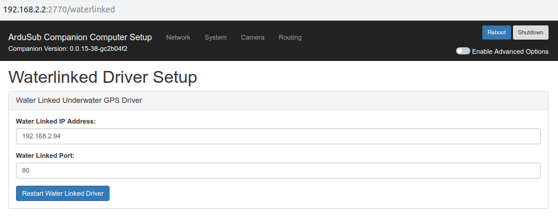
Terminal over browser
Terminal page can be used to:
- Interact with the Companion from a web browser using terminal. (Useful for those who do not use Ubuntu/Linux)
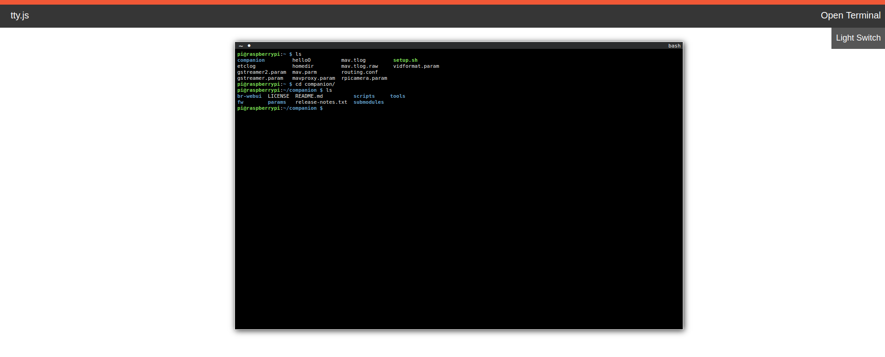
File System Access
File Manager page can be used to:
- View, Download, delete, move, rename, or archive the files on the Companion computer directly from the web browser
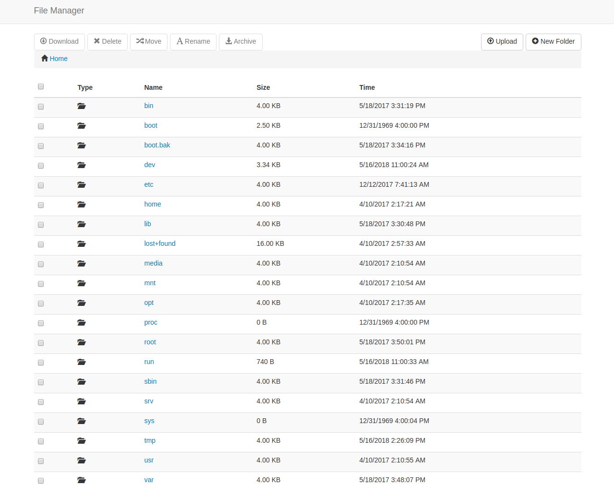
MAVLink REST API
Starting from companion 0.0.19, a MAVLink REST API (http://192.168.2.2:4777/mavlink) endpoint is available. It provides access to the last MAVLink messages sent by the vehicle in json format.
The json contains the same structure defined by the MAVLink protocol standard,
where each field exists and can be accessible.
Besides the MAVLink specification, each message contains an structure called message_information,
that provides the time, frequency and counter of such message.
It's possible to access:
- All messages available in /mavlink
- Specific messages via subpath, E.g: /mavlink/HEARTBEAT or /mavlink/ATTITUDE.
- Single fields via nested subpath, E.g: /mavlink/HEARTBEAT/mavtype/type or or /mavlink/ATTITUDE/pitch.
You can check the following json as a minimal example of what you can find from the main path /mavlink:
{
"ATTITUDE": {
"message_information": {
"counter": 680870,
"frequency": 9.998090744018556,
"time": {
"first_message": "2020-02-05T23:51:19.189911121+00:00",
"last_message": "2020-02-06T18:46:19.301620958+00:00"
}
},
"pitch": -0.24140535295009613,
"pitchspeed": -0.002207340206950903,
"roll": -0.21160905063152313,
"rollspeed": -0.00044677406549453735,
"time_boot_ms": 68104588,
"type": "ATTITUDE",
"yaw": -1.3117148876190186,
"yawspeed": 0.0022055506706237793
},
"DISTANCE_SENSOR": {
"covariance": 0,
"current_distance": 0,
"id": 0,
"mavtype": {
"type": "MAV_DISTANCE_SENSOR_UNKNOWN"
},
"max_distance": 700,
"message_information": {
"counter": 1,
"frequency": null,
"time": {
"first_message": "2020-02-05T23:51:19.245754158+00:00",
"last_message": "2020-02-05T23:51:19.245778012+00:00"
}
},
"min_distance": 20,
"orientation": {
"type": "MAV_SENSOR_ROTATION_PITCH_270"
},
"time_boot_ms": 4482,
"type": "DISTANCE_SENSOR"
},
"HEARTBEAT": {
"autopilot": {
"type": "MAV_AUTOPILOT_ARDUPILOTMEGA"
},
"base_mode": {
"bits": 81
},
"custom_mode": 19,
"mavlink_version": 3,
"mavtype": {
"type": "MAV_TYPE_SUBMARINE"
},
"message_information": {
"counter": 68101,
"frequency": 1.0000146627426147,
"time": {
"first_message": "2020-02-05T23:51:18.970019298+00:00",
"last_message": "2020-02-06T18:46:18.978841566+00:00"
}
},
"system_status": {
"type": "MAV_STATE_CRITICAL"
},
"type": "HEARTBEAT"
},
"POWER_STATUS": {
"Vcc": 5000,
"Vservo": 0,
"flags": {
"bits": 0
},
"message_information": {
"counter": 680870,
"frequency": 9.998090744018556,
"time": {
"first_message": "2020-02-05T23:51:19.199533151+00:00",
"last_message": "2020-02-06T18:46:19.311397896+00:00"
}
},
"type": "POWER_STATUS"
},
"RAW_IMU": {
"message_information": {
"counter": 680871,
"frequency": 9.998106002807615,
"time": {
"first_message": "2020-02-05T23:51:19.099038934+00:00",
"last_message": "2020-02-06T18:46:19.325582710+00:00"
}
},
"time_usec": 3680079699,
"type": "RAW_IMU",
"xacc": -237,
"xgyro": -42,
"xmag": 150,
"yacc": 204,
"ygyro": -1,
"ymag": 67,
"zacc": -920,
"zgyro": 37,
"zmag": 461
},
"RC_CHANNELS": {
"chan10_raw": 1100,
"chan11_raw": 1100,
"chan12_raw": 0,
"chan13_raw": 0,
"chan14_raw": 0,
"chan15_raw": 0,
"chan16_raw": 0,
"chan17_raw": 0,
"chan18_raw": 0,
"chan1_raw": 1500,
"chan2_raw": 1500,
"chan3_raw": 1500,
"chan4_raw": 1500,
"chan5_raw": 1500,
"chan6_raw": 1500,
"chan7_raw": 1500,
"chan8_raw": 1500,
"chan9_raw": 1100,
"chancount": 0,
"message_information": {
"counter": 680870,
"frequency": 9.998090744018556,
"time": {
"first_message": "2020-02-05T23:51:19.220836357+00:00",
"last_message": "2020-02-06T18:46:19.323932621+00:00"
}
},
"rssi": 0,
"time_boot_ms": 68104589,
"type": "RC_CHANNELS"
},
"SCALED_PRESSURE": {
"message_information": {
"counter": 680870,
"frequency": 9.998090744018556,
"time": {
"first_message": "2020-02-05T23:51:19.228165860+00:00",
"last_message": "2020-02-06T18:46:19.327375453+00:00"
}
},
"press_abs": 1240.5726318359375,
"press_diff": 0.0,
"temperature": 19203,
"time_boot_ms": 68104592,
"type": "SCALED_PRESSURE"
},
"SERVO_OUTPUT_RAW": {
"message_information": {
"counter": 680870,
"frequency": 9.998090744018556,
"time": {
"first_message": "2020-02-05T23:51:19.216933118+00:00",
"last_message": "2020-02-06T18:46:19.321753267+00:00"
}
},
"port": 0,
"servo1_raw": 1500,
"servo2_raw": 1500,
"servo3_raw": 1500,
"servo4_raw": 1500,
"servo5_raw": 1500,
"servo6_raw": 1500,
"servo7_raw": 0,
"servo8_raw": 0,
"time_usec": 3680079638,
"type": "SERVO_OUTPUT_RAW"
}
}
Sponsored by Blue Robotics. Code released under the GPLv3 License. Documentation released under the CC-NC-SA 4.0.
Submit a Documentation GitHub Issue here to report any errors, suggestions, or missing information in this documentation.
Submit an ArduSub GitHub Issue here to report issues with the ArduSub software.